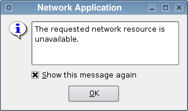

| Home · All Classes · Modules · QSS HELP · QSS 案例 · VER007 HOME |
该QErrorMessage类提供一个错误信息显示对话框。More...
继承QDialog。
该QErrorMessage类提供一个错误信息显示对话框。
一个错误信息窗口小部件由一个文本标籤和一个复选框。该复选框允许用户控制是否相同的错误消息会在未来再次显示出来，通常显示文本“，再次显示此消息”翻译成当地合适的语言。
在生产应用中，类可以用来显示所述用户只需要看到一次的消息。使用QErrorMessage这样，你通常的方式创建对话框，并通过调用显示它的showMessage（）槽或连接信号给它。
静qtHandler（ ）函数安装使用消息处理程序qInstallMsgHandler（ ）并创建一个QErrorMessage的显示器qDebug（ ）qWarning（）和qFatal（ ）消息。这是最有用的环境中没有控制台可以显示警告和错误消息。
在这两种情况下QErrorMessage将伫列中等待消息，并为了显示他们，只要用户已经接受以前的消息被显示的每个新的消息。一旦用户指定的消息不被再次显示它会自动跳过，并且对话框将显示在队列中的下一个相应的消息。
该Standard Dialogs示例显示了如何使用QErrorMessage以及其他内置Qt对话框。

该parent的说法，如果不是没有，原因self通过Qt的，而不是PyQt的拥有。
构造并用给定的安装错误处理程序窗口parent。
从重新实现QWidget.changeEvent（ ） 。
从重新实现QDialog.done（ ） 。
返回一个指针，指向一个QErrorMessage对象，其输出的默认Qt的消息。该函数创建这样一个对象，如果没有一个已。
这种方法也是一个Qt槽与C + +的签名void showMessage(const QString&)。
显示给定的消息，message，并立即返回。如果用户请求的消息不被再次显示，该函数不起作用。
通常情况下，会立即显示该消息。然而，如果存在挂起的消息，它将被排队在后面显示。
这种方法也是一个Qt槽与C + +的签名void showMessage(const QString&,const QString&)。
这是一个重载函数。
显示给定的消息，message，并立即返回。如果用户已经请求类型的消息type，不被再次显示，该函数不起作用。
通常情况下，会立即显示该消息。然而，如果存在挂起的消息，它将被排队在后面显示。
此功能被引入Qt的4.5 。
See also showMessage（ ） 。
| PyQt 4.10.3 for X11 | Copyright © Riverbank Computing Ltd and Nokia 2012 | Qt 4.8.5 |